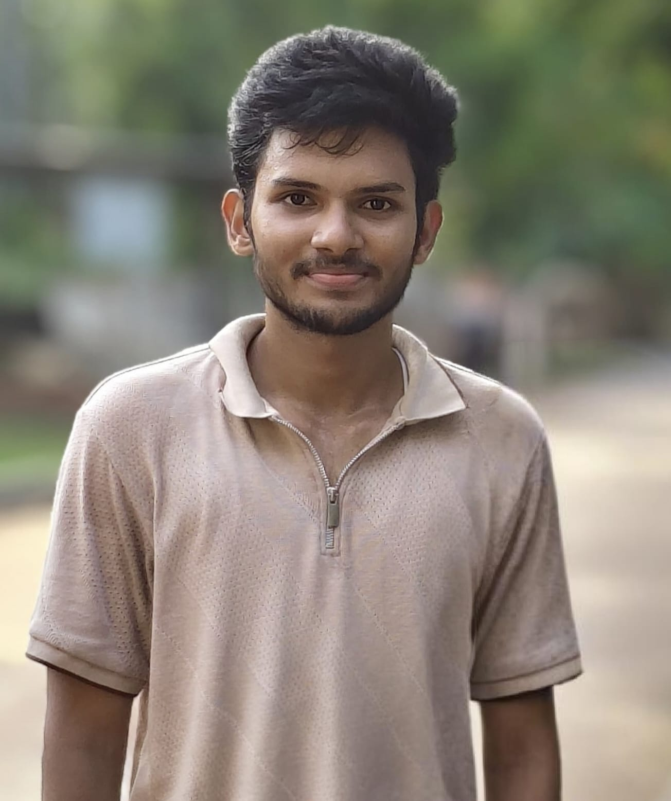

01 IDENTITYENCRYPTED
HELLO, I'M
Siva Syam
Kamana Bala Subhrahmnya Siva Syam
STUDENT. BUILDER. EXPLORER.
PROFILE / 001THE BEGINNING OF SOMETHING▂ ▄ ▆ █
Public archive access
Establishing connection...HELLO, I'M
Kamana Bala Subhrahmnya Siva Syam
STUDENT. BUILDER. EXPLORER.
PROFILE / 001CURRENT CHAPTER
B.Tech · Aditya University
Building my foundations, one idea at a time.LANGUAGES & HUMAN SKILLS
LOOKING BEYOND THE HORIZON
Working toward a Google internship and exploring AI, including OpenAI-related projects.
An ambition I'm learning and building toward.DESIGN THINKING → WORKING WEBSITE
I built a website with help from Claude Pro as part of a design thinking activity, turning a proposed solution into something people can explore.
Explore the project ↗AI-assisted build · Hosted on GitHub Pages